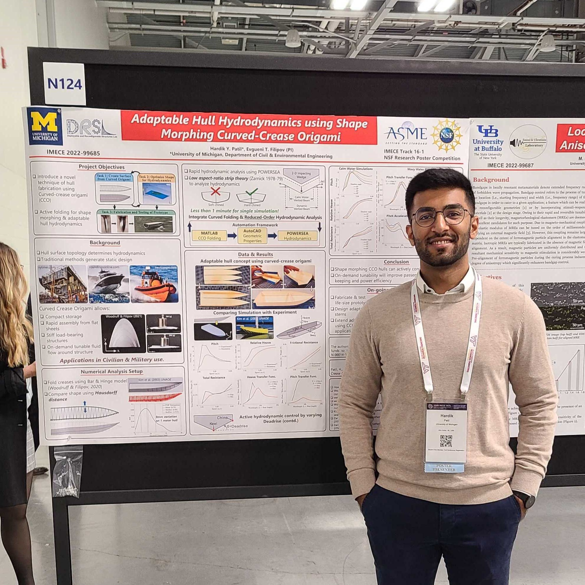

Doctoral Candidate in Civil Engineering (Structures) & Scientific Computing
University of Michigan, Ann Arbor, MI, USA
2021 - Present | GPA: 4.0/4.0
Coursework: Machine Learning, Numerical Linear Algebra, Theory of Elasticity, Programming for Engineers
(C++), Statistics & Data Analysis
Master of Science in Engineering in Civil Engineering (Structures)
University of Michigan, Ann Arbor, MI, USA
2019 - 2021 | GPA: 4.0/4.0
Coursework: Plastic Analysis & Design of Frames, Finite study-section Methods, Non-linear Analysis, Deployable
&
Reconfigurable Structures, Reliability of Structures, Infrastructure Systems Optimization, Wood Structures
Bachelor of Technology with Honors, Civil Engineering
Indian Institute of Technology Bombay, Mumbai, MH, India
2015 - 2019 | GPA: 8.5/10
Coursework: Reinforced Concrete Design, Pre-stressed Concrete Design, Bridge Engineering, Steel Structure
Design, Dynamics of Structures